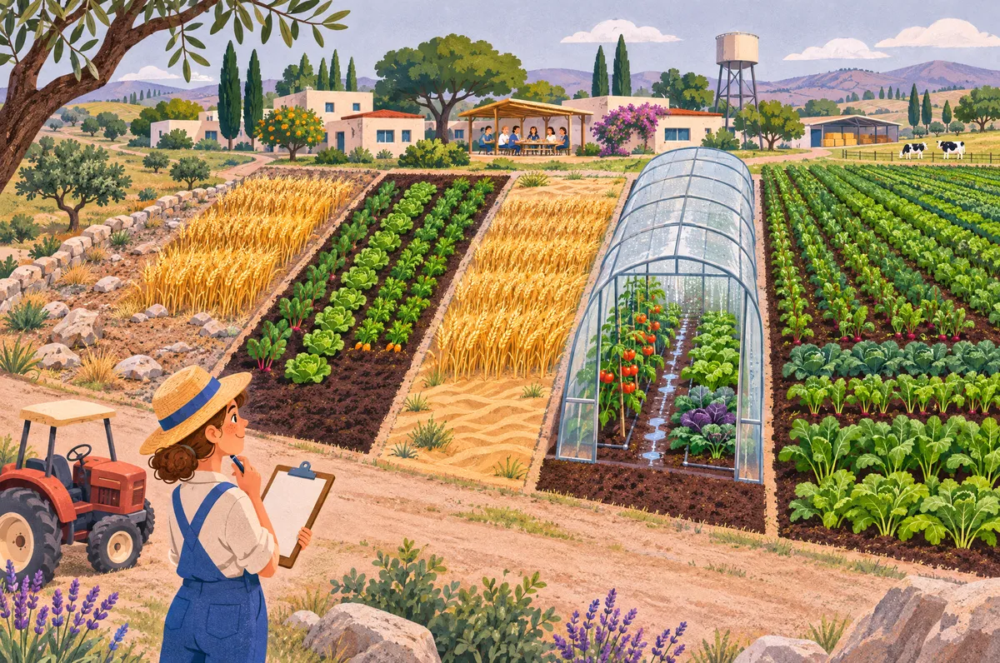

X , Y
קוראים: "איקס", "וואי"
אומר: שם קצר לכמות. X תמיד על הציר האופקי (ימינה), Y על האנכי (למעלה).
למה: כדי לא לכתוב בכל שורה "מספר המכוניות". בשאלה 5: X = מכוניות, Y = טרקטורים. בשאלה 6: X = טון ירקות, Y = טון חיטה.
חדשדף מחברת: הפתרון המלא של שתי השאלות, בדיוק כמו שכותבים במחברת, כולל PDF להדפסה.
שתי השאלות האחרונות בתרגיל, עד הסוף. לכל שאלה יש סרטון עם קריינות שמראה את הפתרון צעד אחר צעד. בתחילת כל שאלה יש פתרון מלא לפי השלבים של המורה, עם הסבר של כל צעד, ואחריו הסברים, ניסויים ותרגול. שאלה 5: מפעל עם שלושה משאבים, ועקומה שנשברת. שאלה 6: קיבוץ עם חמש חלקות, ועקומה שנבנית לפי יתרון יחסי. לפני הכל יש מילון שמסביר כל סימן ולמה שמים אותו.
בשתי השאלות יש הרבה סימנים. כל סימן הוא בעצם קיצור של משפט. כאן מופיע כל אחד מהם: איך קוראים אותו, מה הוא אומר, ולמה בכלל שמים אותו. אם בהמשך סימן לא ברור, חזרו לכאן.
בסרטון הזה נפתור את שאלה 5, צעד אחר צעד, בדיוק לפי השלבים של המורה.
יש מפעל שבונה מכוניות וטרקטורים. כל רכב לוקח משאבים משלוש קופסאות: שעות עבודה, שעות מכונה ושטח.
נקרא למכוניות X, ולטרקטורים Y. ברגע שקופסה אחת נגמרת, המפעל עוצר. הקופסה הזאת היא צוואר הבקבוק.
שלב ראשון: כותבים אילוץ לכל קופסה. מה שהמכוניות לוקחות, ועוד מה שהטרקטורים לוקחים, קטן או שווה למה שיש.
שלב שני: משאירים את Y לבד. מחלקים במספר שכתוב ליד Y, ומעבירים את X לצד השני.
שלב שלישי: הקצוות. אם בונים רק טרקטורים, המכונות מספיקות רק ל־8. אם בונים רק מכוניות, העבודה מספיקה רק ל־8. תמיד לוקחים את הקטן מכולם.
שלב רביעי: משווים בין כל שני קווים. מכונות ושטח נפגשים בנקודה (2, 7). עבודה ושטח נפגשים בנקודה (7, 2).
שלב חמישי: בודקים כל נקודה מול הקופסה השלישית. הנקודה (5 ושליש, 5 ושליש), שבה העבודה והמכונות נפגשות, צריכה יותר שטח ממה שיש. לכן זורקים אותה.
שלב שישי: העקומה היא תמיד הקו הנמוך מבין השלושה. יוצאת עקומה שבורה, עם ארבע נקודות: A, B, C ו־D.
סעיף 2: כמה מכוניות עולה טרקטור? מחלקים את מה שטרקטור לוקח מצוואר הבקבוק, במה שמכונית לוקחת ממנו. יוצא ½ מכונית, מכונית אחת ושתי מכוניות.
ככל שבונים יותר טרקטורים, כך כל טרקטור נוסף עולה יותר מכוניות. לכן העקומה קמורה.
סעיף 3: מוסיפים שטח, 100 מטר רבוע במקום 90. רק האמצע של העקומה זז החוצה, לנקודות (4, 6) ו־(6, 4). הקצוות והמחירים לא משתנים.
זה כל הסוד: שלוש קופסאות, והקופסה שנגמרת ראשונה היא הבוס. היא קובעת את העקומה.
כל שלב בנוי משלושה חלקים: מה המורה ביקשה (מתוך "המתכון, צעד אחר צעד" בשיעור), מה עשיתי (החישוב), ולמה (מה זה אומר במילים). X = מכוניות, Y = טרקטורים.
המורה: "אילוץ לכל גורם: (כמה מכונית צריכה)·X + (כמה טרקטור צריך)·Y ≤ (כמה יש)". במצגת: Ax·X + Ay·Y ≤ A.
| גורם | Ax (מכונית) | Ay (טרקטור) | A (יש) |
|---|---|---|---|
| עבודה | 200 | 100 | 1600 |
| מכונות | 5 | 10 | 80 |
| שטח | 10 | 10 | 90 |
למה: 200X = שעות העבודה שכל המכוניות לוקחות (200 לכל אחת, כפול מספר המכוניות). 100Y = מה שהטרקטורים לוקחים. ביחד זה כל מה שמשתמשים בו, וזה צריך להיות ≤ ממה שיש. ≤ ולא =, כי מותר שיישאר עודף.
המורה: "משאירים את Y לבד (מחלקים במספר שליד Y)". במצגת: Y ≤ A/Ay − (Ax/Ay)·X.
בדיקה עם נוסחת המצגת, למשל בעבודה: A/Ay = 1600/100 = 16, Ax/Ay = 200/100 = 2, ולכן Y ≤ 16 − 2X. אותה תוצאה.
למה: בצורה Y ≤ a − b·X רואים מיד את הקו. a = איפה הוא פוגש את ציר ה־Y (כמה טרקטורים אם לא בונים מכוניות). b = כמה טרקטורים יורדים על כל מכונית. בלי השלב הזה אי אפשר לצייר ולהשוות.
המורה: "לכל אילוץ בדוק כמה Y אם X=0, וכמה X אם Y=0. הקצוות של העקומה הם הקטנים מכולם".
| אילוץ | X = 0 (רק טרקטורים) | Y = 0 (רק מכוניות) |
|---|---|---|
| עבודה | Y = 16 | 0 = 16 − 2X → X = 8 |
| מכונות | Y = 8 | 0 = 8 − 0.5X → X = 16 |
| שטח | Y = 9 | 0 = 9 − X → X = 9 |
| הכי קטן | Y = 8 → A(0, 8) | X = 8 → D(8, 0) |
למה הקטן? המשאב שנגמר ראשון עוצר הכל. אם בונים רק טרקטורים, המכונות מספיקות רק ל־8, ולכן לא משנה שהעבודה מספיקה ל־16. אם בונים רק מכוניות, העבודה מספיקה רק ל־8.
המורה: "השווה כל שני אילוצים. יש שלושה זוגות, אז שלוש נקודות".
למה =? בנקודת מפגש שני המשאבים נגמרים בדיוק באותו רגע. אלה המקומות שבהם "הבוס" מתחלף, ושם העקומה יכולה להישבר.
המורה: "כל נקודה בודקים מול האילוץ השלישי. חורגת? זורקים אותה".
למה בודקים? נקודת מפגש מבטיחה ששני משאבים מספיקים, אבל לא את השלישי. בנקודה (5⅓, 5⅓) העבודה והמכונות מספיקות, אבל צריך 106⅔ מ״ר ויש רק 90. כלומר היא מחוץ לעקומה: בלתי אפשרית.
המורה: "העקומה היא בכל X הקו הנמוך מבין האילוצים. כותבים אותה בחלקים: משוואה, טווח של X, ומי צוואר הבקבוק".
למה הנמוך ולמה הטווח? כל קו גבוה יותר "מבטיח" משאב שכבר נגמר. הטווח 0 ≤ X ≤ 2 אומר שהמשוואה נכונה רק בקטע הזה, כי רק שם המכונות הן הבוס.
עקומת התמורה היא המעטפת התחתונה של שלושת האילוצים, כי בכל נקודה הגורם שנגמר ראשון מגביל את הייצור. נקודות המפגש הרלוונטיות הן B(2, 7) ו־C(7, 2). הנקודה (5⅓, 5⅓) נפסלת, כי היא חורגת מאילוץ השטח. נקודות הקצה הן A(0, 8) ו־D(8, 0). העקומה ABCD שבורה: ב־AB צוואר הבקבוק הוא המכונות, ב־BC השטח, וב־CD העבודה.
המורה: "כמה מהגורם המגביל טרקטור צריך, חלקי כמה ממנו מכונית צריכה". בפתרון שבשיעור: "מחלקים את השינוי במכוניות (X) בשינוי בטרקטורים (Y)", וממלאים טבלה של חלק, ייצור, ויתור ועלות.
דרך א׳, מהנקודות (ΔX ÷ ΔY):
דרך ב׳, מהגורם המגביל: מכונות 10 ÷ 5 = 2. שטח 10 ÷ 10 = 1. עבודה 100 ÷ 200 = ½.
| חלק | ייצור (טרקטורים) | ויתור (מכוניות) | עלות | צוואר בקבוק |
|---|---|---|---|---|
| AB | 1 | 2 | 2 | מכונות |
| BC | 5 | 5 | 1 | שטח |
| CD | 2 | 1 | ½ | עבודה |
למה מורידים את המינוס? המינוס רק אומר שכשטרקטורים עולים, מכוניות יורדות. המחיר הוא "כמה מוותרים", וזו כמות חיובית. למה ΔX למעלה? שואלים כמה מכוניות (X) עולה טרקטור (Y). מה שמשלמים בו למעלה, מה שקונים למטה.
מחיר הטרקטור במונחי מכוניות הוא העלות האלטרנטיבית השולית שלו. בכל קטע הוא נקבע לפי גורם הייצור שמהווה צוואר בקבוק: היחס בין הכמות שטרקטור צורך ממנו לכמות שמכונית צורכת ממנו. ב־CD ½, ב־BC 1, ב־AB 2. ככל שמייצרים יותר טרקטורים, טרקטור נוסף עולה יותר מכוניות, ולכן העקומה קמורה ושבורה.
המורה: "משנים רק את אילוץ השטח (100 במקום 90) וחוזרים על צעדים 3–6".
שלב 3, קצוות: השטח מספיק עכשיו ל־10 בכל קצה, אבל המכונות (8) והעבודה (8) עדיין קטנות יותר. לכן A(0, 8) ו־D(8, 0) לא זזות.
שלב 4, מפגשים:
שלב 5, בדיקות:
שלב 6, העקומה החדשה:
מחירים:
למה רק האמצע זז? הוספנו רק שטח. השטח היה הבוס רק בקטע האמצעי, ולכן רק שם העקומה יוצאת החוצה. המחירים נשארו (2, 1, ½), כי כמה כל רכב צורך מכל משאב לא השתנה.
אילוץ השטח הופך ל־X + Y ≤ 10. נקודות המפגש החדשות הן B(4, 6) ו־C(6, 4). נקודות הקצה A(0, 8) ו־D(8, 0) לא משתנות, כי בהן השטח אינו הגורם המגביל. המחירים בכל קטע לא משתנים (2, 1, ½), כי מקדמי הייצור לא השתנו. העקומה מתרחבת רק בקטע שבו השטח מגביל: קטע BC מתקצר, וקטעי AB ו־CD מתארכים.
מהמצגת: השקף "התפלגות גורמי הייצור". בודקים, בכל פינה, איזה משאב לא מנוצל עד הסוף.
למה זה לא בזבוז? זו אבטלה מבנית: אי אפשר להעסיק את העובדים, כי חסר משאב אחר (שטח). אי אפשר לייצר יותר משני המוצרים, ולכן הנקודות עדיין על העקומה ויעילות.
יש מפעל שבונה שני דברים: מכוניות (נקרא להן X) וטרקטורים (Y). כדי לבנות, המפעל לוקח משלוש "קופסאות":

הכלל היחידהקופסה שנגמרת ראשונה היא "הבוס". היא קובעת כמה אפשר לבנות. כל השאר נשאר עם עודף שלא משתמשים בו.
השאלה מבקשת שלושה דברים:

בחרו כמה טרקטורים לבנות. המפעל יחשב כמה מכוניות עוד נכנסות, ויראה לכם איזו קופסה נגמרת ראשונה. שימו לב איך "הבוס" מתחלף כשמזיזים את המחוון.
הפס הצבעוני = כמה מהקופסה בשימוש. הקופסה עם המסגרת האדומה היא זו שהתרוקנה, הבוס. האפור שנשאר בפסים האחרים הוא משאב שעומד בלי עבודה.
ראיתם? כשבונים מעט טרקטורים, העובדים נגמרים ראשונים. באמצע, המקום נגמר ראשון. וכשבונים הרבה טרקטורים, המכונות נגמרות ראשונות. שלושה בוסים שונים, ולכן לעקומה יש שלושה קטעים.
עכשיו נעשה את זה כמו במבחן. לכל קופסה כותבים אילוץ: "מה שלוקחים לא יכול לעבור את מה שיש". הסימן ≤ אומר "לכל היותר".
מחלקים כל אילוץ במספר שליד Y, כדי ש־Y יעמוד לבד. ככה רואים מיד את הקו:
מה הסימנים עושים כאן? ≤ = "לכל היותר": מותר להשאיר עודף, אסור לעבור. → = "ולכן": אחרי שמחלקים את שני הצדדים באותו מספר (בפתרון שלכם זה כתוב /:100), מקבלים שורה פשוטה יותר. − לפני X אומר שהקו יורד: כל מכונית נוספת "גונבת" מקום מהטרקטורים.
בכל X, Y צריך לקיים את שלושת האילוצים ביחד. לכן העקומה היא תמיד הקו הנמוך מבין השלושה. הקו הגבוה מבטיח משהו שאין לנו.
משווים כל שני קווים (יש שלושה זוגות), ובודקים כל נקודה מול הקו השלישי:
| זוג | משווים | נקודה | בדיקה מול השלישי |
|---|---|---|---|
| מכונות + מקום | 8 − 0.5X = 9 − X | B(2, 7) | עובדים: 1,100 ≤ 1,600 ✓ |
| עובדים + מקום | 16 − 2X = 9 − X | C(7, 2) | מכונות: 55 ≤ 80 ✓ |
| עובדים + מכונות | 16 − 2X = 8 − 0.5X | (5⅓, 5⅓) | מקום: 106⅔ > 90 ✗ נפסלת |
ועוד שני קצוות: רק טרקטורים A(0, 8), ורק מכוניות D(8, 0). סך הכל ארבע נקודות.
למה יש בסוף כל שורה טווח כמו 0 ≤ X ≤ 2? כי לעקומה השבורה יש שלוש משוואות, וכל אחת נכונה רק בקטע שבו הגורם שלה הוא הבוס. הטווח אומר לבודק "השורה הזאת עובדת רק כאן". בלי טווח, נראה כאילו כל אחת מהמשוואות היא העקומה כולה.
למה הנקודה (5⅓, 5⅓) "נראית" נכונה ועדיין שגויה? היא אכן המקום שבו העובדים והמכונות נגמרים יחד. אבל כדי להגיע אליה צריך 106⅔ מ״ר, ויש רק 90. נקודה שחורגת מאילוץ אחד היא מחוץ לעקומה, כלומר בלתי אפשרית.
המחיר של טרקטור = כמה מכוניות מוותרים כדי לבנות עוד טרקטור אחד. זו העלות האלטרנטיבית השולית. והסוד: המחיר נקבע רק לפי הבוס, הקופסה שנגמרה.
הנוסחהמחיר טרקטור = כמה טרקטור לוקח מהבוס ÷ כמה מכונית לוקחת מהבוס
הסימנים: ÷ = חלקי, "כמה לכל אחד". ½ = חצי. כשכתוב "100 ÷ 200 = ½" זה אומר: טרקטור לוקח חצי ממה שמכונית לוקחת, ולכן הוא "עולה" חצי מכונית.
למה זה עובד? אם הבוס ריק, כדי לבנות טרקטור צריך "לפנות" לו מקום בקופסה הזאת, כלומר לוותר על מכוניות שמשתמשות בה. כמה מכוניות? בדיוק כמה שצריך כדי לשחרר את מה שטרקטור לוקח.
שימו לב שהמחיר עולה ככל שבונים יותר טרקטורים: ½, אחר כך 1, אחר כך 2. זה בדיוק "חוק העלות האלטרנטיבית העולה" מהשיעור, ולכן העקומה קמורה (בולטת החוצה). ההבדל מעקומה חלקה: כאן המחיר קופץ במדרגות ולא עולה בהדרגה, ולכן העקומה שבורה.
טעות נפוצה: לכתוב את השיפוע במקום את המחיר (Δ = "השינוי", ו־|…| = בלי מינוס). בקטע של העובדים השיפוע הוא −2 (Y יורד ב־2 כש־X עולה ב־1). אבל השאלה שואלת על טרקטור במונחי מכוניות, כלומר ΔX ÷ ΔY = ½. תמיד שואלים את עצמכם: "מה אני קונה, ובמה אני משלם?"
ובכיוון ההפוך? מחיר של מכונית במונחי טרקטורים הוא פשוט ההופכי: בקטע העובדים 2, במקום 1, במכונות ½.
סעיף 3 שואל על 100 מ״ר. אבל למה לעצור שם? הזיזו את המחוון ותראו את כל הסיפור.
אילוץ המקום נהיה X + Y ≤ 10. העובדים והמכונות לא השתנו. הפינות החדשות: B(4, 6) ו־C(6, 4). הקצוות נשארים A(0, 8) ו־D(8, 0), כי שם המקום ממילא לא היה הבוס.
המחירים לא משתנים (½, 1, 2), כי כמה כל רכב לוקח מכל קופסה לא השתנה. משתנים רק הגבולות בין הקטעים: קטע המקום מתקצר, וקטעי העובדים והמכונות מתארכים. העקומה זזה החוצה רק באמצע.
השיעור הגדוללהוסיף משאב עוזר רק איפה שהוא הבוס. משאב שלא נגמר הוא כסף שזרקתם.
"אותו מספר" אומר Y = X. מחפשים איפה הקו הזה פוגש את העקומה. ב־X = Y אנחנו בקטע של המקום (בין 2 ל־7), אז מציבים באילוץ המקום:
ומי מובטל? עובדים: 200·4.5 + 100·4.5 = 1,350 מתוך 1,600, אז 250 שעות עבודה עומדות. מכונות: 5·4.5 + 10·4.5 = 67.5 מתוך 80, אז 12.5 שעות מכונה עומדות.
זו בדיוק הדוגמה של "Y = 2X" מהמצגת (נושא 9, להעמקה), רק עם יחס אחר.
בשיעור למדנו: נקודה בתוך העקומה = בזבוז. אז איך יכולים להיות עובדים בלי עבודה בנקודה על העקומה?
התשובה: כאן אי אפשר להעסיק אותם. כל רכב צריך "מתכון" קבוע. אם המקום נגמר, אין איפה לשים עוד רכב, ולכן עובד נוסף לא יכול לבנות כלום. זו אבטלה מבנית: לא בזבוז של המפעל, אלא חוסר במשאב אחר. אי אפשר לייצר יותר משני המוצרים, ולכן הנקודה יעילה.
בנקודה B(2, 7): 500 שעות עבודה עומדות. בנקודה C(7, 2): 25 שעות מכונה עומדות. בסימולטור למעלה רואים את זה בפסים.
תלוי איפה אתם על העקומה. קונים רק את הבוס:
במבחן בדרך כלל מתייחסים לעקומה כרציפה, כמו בפתרון כאן. אם השאלה אומרת במפורש "יחידות שלמות", בוחרים מתוך הנקודות השלמות על העקומה או מתחתיה. למשל ב־1 טרקטור אפשר 7.5 מכוניות, כלומר בפועל 7.
נסמן X = מכוניות, Y = טרקטורים. אילוצי הייצור:
עקומת התמורה היא המעטפת התחתונה של האילוצים, כי בכל נקודה הגורם שנגמר ראשון מגביל את הייצור. נקודות המפגש הרלוונטיות: B(2, 7) (מכונות ושטח) ו־C(7, 2) (כוח אדם ושטח). מפגש כוח האדם והמכונות (5⅓, 5⅓) נפסל כי הוא חורג מאילוץ השטח. נקודות הקצה: A(0, 8) ו־D(8, 0). העקומה ABCD שבורה, ובכל קטע גורם אחר הוא צוואר הבקבוק: מכונות ב־AB, שטח ב־BC, כוח אדם ב־CD.
מחיר טרקטור במונחי מכוניות הוא העלות האלטרנטיבית השולית שלו, |ΔX/ΔY|. בכל קטע הוא שווה ליחס בין צריכת גורם צוואר הבקבוק של טרקטור לזו של מכונית: ב־CD 100/200 = ½, ב־BC 10/10 = 1, ב־AB 10/5 = 2. המחיר עולה ככל שמייצרים יותר טרקטורים, ולכן העקומה קמורה לראשית ושבורה.
אילוץ השטח הופך ל־X + Y ≤ 10. נקודות המפגש החדשות: B(4, 6) ו־C(6, 4). נקודות הקצה A ו־D לא משתנות, כי בהן השטח אינו הגורם המגביל. המחירים בכל קטע לא משתנים (2, 1, ½), כי מקדמי הייצור לא השתנו. העקומה מתרחבת רק בקטע שבו השטח מגביל, קטע BC מתקצר, וקטעי AB ו־CD מתארכים.
אותו מפעל, אותו מתכון, אבל עכשיו יש 100 שעות מכונה במקום 80. עובדים (1,600) ומקום (90) לא השתנו. מלאו את המספרים ולחצו "בדיקה".
אילוץ המכונות נהיה 5X + 10Y ≤ 100, כלומר Y ≤ 10 − 0.5X.
רק טרקטורים: עובדים 16, מכונות 10, מקום 9. הכי קטן: 9, והבוס עכשיו הוא המקום.
רק מכוניות: עובדים 8, מכונות 20, מקום 9. הכי קטן: 8 (עובדים).
פינות: מכונות ומקום נפגשים ב־10 − 0.5X = 9 − X, כלומר X = −2. זה מחוץ לגרף, אז הם לא נפגשים בכלל. עובדים ומקום נפגשים ב־C(7, 2) ✓. עובדים ומכונות ב־(4, 8), שצריכה 120 מ״ר ✗. לכן יש פינה אחת, ב־(7, 2).
מחירים: בין 0 ל־2 טרקטורים הבוס הוא העובדים: ½. בין 2 ל־9 טרקטורים הבוס הוא המקום: 1.
המסקנהאחרי שקנו מכונות, המכונות אף פעם לא נגמרות ראשונות. הן הפסיקו להיות צוואר בקבוק, והקטע שלהן נעלם מהעקומה.
עכשיו שאלה 6. לקיבוץ יש חמש חלקות, וכל חלקה יכולה לגדל ירקות או חיטה. נבנה את עקומת התמורה שלו.
שלב ראשון: לכל חלקה מחשבים כמה עולה טון ירקות. על מה מוותרים, חלקי מה מקבלים. כלומר חיטה, חלקי ירקות.
בחלקה A, כל טון ירקות עולה 5 טון חיטה. יקר מאוד. בחלקה D הוא לא עולה כלום, כי היא לא יכולה לגדל חיטה בכלל.
שלב שני: מסדרים מהזולה ועד היקרה. D, אחר כך B, E, C, ובסוף A. זה הסדר שבו החלקות עוברות לירקות.
שלב שלישי: מתחילים כשהכול חיטה, אלף שש מאות טון. ואז מעבירים לירקות את החלקה הזולה, D, ורושמים נקודה.
בכל צעד מוסיפים את הירקות של החלקה הבאה, ומורידים את החיטה שלה. ממשיכים עד שהכול ירקות, אלף וחמש מאות טון.
מחברים את הנקודות בסרגל. כל קטע תלול יותר מהקודם, כי כל חלקה נוספת יקרה יותר. לכן העקומה קמורה.
ומה כותבים בהסבר? יתרון יחסי: קודם עוברת החלקה שבה מוותרים על הכי מעט חיטה. חלקה E מגדלת הכי הרבה משני הגידולים, ובכל זאת היא שלישית בתור.
עכשיו תורכם. נסו לבד את שאלת התרגול שבעמוד, ובדקו את עצמכם. בהצלחה!
אותו מבנה: מה המורה ביקשה, מה עשיתי, למה. X = טון ירקות, Y = טון חיטה.
המורה: "לכל חלקה: כמה עולה טון ירקות? מה מוותרים ÷ מה מקבלים, כלומר חיטה ÷ ירקות".
| חלקה | ייצור (ירקות) | ויתור (חיטה) | חישוב | עלות |
|---|---|---|---|---|
| A | 100 | 500 | 500 ÷ 100 | 5 |
| B | 200 | 50 | 50 ÷ 200 | ¼ |
| C | 300 | 450 | 450 ÷ 300 | 1½ |
| D | 400 | 0 | 0 ÷ 400 | 0 |
| E | 500 | 600 | 600 ÷ 500 | 1.2 |
למה בסדר הזה? ÷ עונה על "כמה לכל אחד". מה ששילמנו (חיטה) למעלה, מה שקיבלנו (ירקות) למטה, ולכן התוצאה היא "כמה טון חיטה לכל טון ירקות". למשל ב־A: 500 ÷ 100 = 5 טון חיטה לכל טון ירקות. ב־D: 0 ÷ 400 = 0, כי לא מוותרים על כלום.
המורה: "מסדרים מהזולה ליקרה".
למה? רוצים לקבל ירקות במחיר הכי נמוך. לכן קודם מעבירים את החלקה שבה מוותרים על הכי מעט חיטה. זה עקרון היתרון היחסי.
המורה: "התחלה: הכול חיטה. 0 ירקות, ו־500+50+450+0+600 = 1,600 טון חיטה".
למה? אלה שני הקצוות של העקומה: כל האדמה בגידול אחד. בנקודה (0, 1600) המספר הראשון הוא X (ירקות) והשני Y (חיטה).
המורה: "מעבירים את הזולה לירקות: מוסיפים את הירקות שלה, מורידים את החיטה שלה, ורושמים נקודה".
למה + ו־−? כשהחלקה עוברת לירקות, הירקות גדלים (+ ל־X) והחיטה שלה נעלמת (− מ־Y). ב־D לא נעלם כלום, כי היא לא גידלה חיטה.
המורה: "חוזרים עם החלקה הבאה, עד שהכול ירקות".
בדיקה: הנקודה האחרונה (1500, 0) יצאה בדיוק כמו הקצה "הכל ירקות" משלב 3. ✓
למה מתחילים מהנקודה האחרונה? כל חלקה מתווספת למה שכבר יש. הירקות מצטברים, והחיטה הולכת ונגמרת.
המורה: "מסמנים את 6 הנקודות ומחברים בסרגל. בדיקה: הקו נעשה תלול יותר מקטע לקטע, ולכן הוא קמור".
למה בסרגל? בתוך כל חלקה המחיר קבוע, ולכן כל קטע הוא קו ישר. למה זה קמור? בלי המינוס, השיפועים הם 0, ¼, 1.2, 1½, 5. הם עולים כל הזמן, כלומר כל טון ירקות נוסף עולה יותר חיטה, ולכן הקו מתעקל החוצה.
המורה: "בהסבר כותבים: יתרון יחסי. קודם החלקה שבה העלות האלטרנטיבית השולית של ירקות הכי נמוכה".
העקומה נבנתה לפי עקרון היתרון היחסי: כדי להגדיל את ייצור הירקות, מעבירים בכל פעם את החלקה שבה העלות האלטרנטיבית השולית של טון ירקות (בטון חיטה) היא הנמוכה ביותר מבין החלקות שנותרו. הסדר הוא D, B, E, C, A. כיוון שהעלות עולה מחלקה לחלקה (0, ¼, 1.2, 1½, 5), העקומה קמורה.
שתי תוספות שמוסיפות נקודות: (1) חלקה E מגדלת הכי הרבה משני הגידולים (יתרון מוחלט), ובכל זאת היא שלישית בתור. את הסדר קובע היתרון היחסי, לא המוחלט. (2) הנקודה (0, 1600) אינה יעילה, כי (400, 1600) נותנת אותה כמות חיטה ועוד 400 טון ירקות בחינם.
לקיבוץ יש 5 חלקות אדמה. כל חלקה יכולה לגדל ירקות או חיטה, אבל לא את שניהם. כל חלקה טובה במשהו אחר, כי לכל אחת אדמה אחרת.

| חלקה | A | B | C | D | E |
|---|---|---|---|---|---|
| אם מגדלים בה ירקות | 100 | 200 | 300 | 400 | 500 |
| אם מגדלים בה חיטה | 500 | 50 | 450 | 0 | 600 |
השאלה מבקשת לבנות את עקומת התמורה (כל הצירופים הכי טובים של ירקות וחיטה) ולהסביר לפי איזה עיקרון בנינו אותה.
הכלל היחידמעבירים לירקות קודם את החלקה שבה מוותרים על הכי מעט חיטה לכל טון ירקות. זה נקרא יתרון יחסי.
סימנים בשאלה הזאת: X = טון ירקות (ציר אופקי), Y = טון חיטה (ציר אנכי). נקודה כמו (400, 1600) = 400 טון ירקות ו־1,600 טון חיטה. ראו מילון הסימנים.
קודם הכי פשוט: מה קורה אם כל החלקות מגדלות את אותו דבר? פשוט מחברים את השורה בטבלה.
הסימנים כאן: + מחבר את מה שכל חלקה מגדלת. = נותן את הסכום. → אומר "ולכן הנקודה היא". בנקודה (0, 1600) המספר הראשון הוא 0, כי X הוא ירקות ויש 0 ירקות.
אלה שני הקצוות של העקומה. כל השאר נמצא ביניהם, והשאלה היא באיזה מסלול הולכים מהקצה האחד לשני.
מעבירים חלקה מחיטה לירקות. מה מקבלים? את הירקות שלה. על מה מוותרים? על החיטה שלה. כמו מחיר בחנות:
הנוסחהמחיר טון ירקות = מה שמוותרים ÷ מה שמקבלים = חיטה ÷ ירקות
למה דווקא בסדר הזה? ÷ עונה על "כמה לכל אחד". בחנות: שילמתם 10 ₪ וקיבלתם 2 פלאפלים, אז 10 ÷ 2 = 5 ₪ לכל פלאפל. מה ששילמתם למעלה, מה שקיבלתם למטה. פה "שילמנו" בחיטה וקיבלנו ירקות, ולכן חיטה ÷ ירקות = כמה טון חיטה עולה כל טון ירקות. אם מחלקים הפוך, מקבלים את המחיר של חיטה, וזו שאלה אחרת.
| חלקה | מקבלים (ירקות) | מוותרים (חיטה) | חישוב | מחיר | תור |
|---|---|---|---|---|---|
| D | 400 | 0 | 0 ÷ 400 | 0 | 1 · חינם |
| B | 200 | 50 | 50 ÷ 200 | ¼ | 2 |
| E | 500 | 600 | 600 ÷ 500 | 1.2 | 3 |
| C | 300 | 450 | 450 ÷ 300 | 1½ | 4 |
| A | 100 | 500 | 500 ÷ 100 | 5 | 5 · הכי יקרה |
איך קוראים שורה? חלקה B: כל טון ירקות שמגדלים בה עולה רבע טון חיטה. זול! חלקה A: כל טון ירקות בה עולה 5 טון חיטה. יקר מאוד. האדמה שלה מצוינת לחיטה, וחבל לבזבז אותה על ירקות.
ומה עם D? 0 ÷ 400 = 0. אפס חלקי כל מספר הוא אפס: אם מוותרים על כלום, המחיר הוא כלום. D לא מגדלת חיטה בכלל, אז להעביר אותה לירקות זה "חינם".
לחצו על החלקות לפי הסדר שבו אתם רוצים להעביר אותן מחיטה לירקות. הגרף יצייר את המסלול שלכם, ויגיד לכם כמה חיטה הפסדתם לעומת הסדר הכי טוב. נסו פעם אחת סדר "לפי מי שמגדלת הכי הרבה ירקות" (E קודם), ופעם אחת לפי המחיר.
מה ראיתם? כשהולכים לפי המחיר (D, B, E, C, A), כל קטע תלול יותר מהקודם, והקו בולט החוצה. זו עקומת התמורה. כל סדר אחר נותן קו מתחתיה: אותה כמות ירקות, אבל פחות חיטה. כלומר בזבוז.
מתחילים מ"הכל חיטה" (0, 1600). בכל צעד מעבירים את החלקה הבאה בתור: מוסיפים את הירקות שלה ל־X, ומורידים את החיטה שלה מ־Y.
למה + בצד אחד ו־− בצד השני? בתוך הסוגריים יש שני מספרים: הראשון הוא X (ירקות) והשני הוא Y (חיטה). כשהחלקה עוברת לירקות, הירקות גדלים, ולכן +. החיטה קטנה, ולכן −. ה־→ אומר "ולכן הנקודה החדשה היא".
המחיר עולה מחלקה לחלקה: 0, ¼, 1.2, 1½, 5. לכן כל קטע בעקומה תלול יותר מהקודם, והעקומה קמורה. זה בדיוק כמו "לבוש ומזון" מהשיעור: לא כל המשאבים טובים באותה מידה, ומשתמשים קודם במתאימים ביותר.
מי שמגדל הכי הרבה. חלקה E מגדלת הכי הרבה ירקות (500) וגם הכי הרבה חיטה (600). יש לה יתרון מוחלט בשניהם.
מי שמוותר הכי מעט. בירקות זו D (מחיר 0), ואחריה B (¼). זה מה שקובע את הסדר.
אז למה E, הכי "חזקה", רק שלישית בתור? כי היא טובה מאוד גם בחיטה. כל טון ירקות בה עולה 1.2 טון חיטה, יותר מאשר ב־D או ב־B. זה בדיוק עורך הדין מהשיעור: הוא מקליד מהר יותר מהמזכירה, ובכל זאת היא מקלידה, כי בשבילו ההקלדה "יקרה".
עוד נקודה שמוסיפה ניקוד: הנקודה (0, 1600) היא לא יעילה. למה? הנקודה (400, 1600) נותנת אותה כמות חיטה ועוד 400 טון ירקות בחינם (חלקה D). לכן הקטע הראשון של העקומה שטוח, ואין סיבה לעצור בתחילתו.
נסמן X = טון ירקות, Y = טון חיטה. נקודות הקצה: כל החלקות בחיטה (0, 1600), וכל החלקות בירקות (1500, 0).
לכל חלקה מחשבים את העלות האלטרנטיבית של טון ירקות במונחי חיטה (ויתור ÷ ייצור): A = 5, B = ¼, C = 1½, D = 0, E = 1.2.
מעבירים את החלקות לירקות מהזולה ליקרה: D, B, E, C, A. הנקודות: (0, 1600), (400, 1600), (600, 1550), (1100, 950), (1400, 500), (1500, 0).
העקומה נבנתה לפי עקרון היתרון היחסי: כדי להגדיל את ייצור הירקות, מעבירים בכל פעם את החלקה שבה העלות האלטרנטיבית השולית של טון ירקות היא הנמוכה ביותר מבין החלקות שנותרו. כיוון שהעלות עולה מחלקה לחלקה (0, ¼, 1.2, 1½, 5), העקומה קמורה לראשית. הסדר נקבע לפי יתרון יחסי ולא לפי יתרון מוחלט: חלקה E מגדלת הכי הרבה משני הגידולים, ובכל זאת היא שלישית.
| חלקה | K | L | M | N |
|---|---|---|---|---|
| ירקות | 200 | 300 | 100 | 400 |
| חיטה | 100 | 600 | 0 | 400 |
קצוות: הכל חיטה: 100 + 600 + 0 + 400 = 1,100. הכל ירקות: 200 + 300 + 100 + 400 = 1,000.
מחירים (חיטה ÷ ירקות): K = 100 ÷ 200 = ½, L = 600 ÷ 300 = 2, M = 0 ÷ 100 = 0, N = 400 ÷ 400 = 1.
סדר: M (0), K (½), N (1), L (2). ראשונה M, אחרונה L.
נקודות: (0, 1100) → M (100, 1100) → K (300, 1000) → N (700, 600) → L (1000, 0). אחרי שתי חלקות: 300 טון ירקות ו־1,000 טון חיטה.
שימו לבגם כאן החלקה עם הכי הרבה ירקות (N, 400) היא לא הראשונה. היא שלישית, כי היא טובה גם בחיטה.